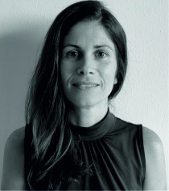

Aula invertida en Fundamentos de Psicobiología II
Creación de vídeos originales de neuroanatomía para trabajo previo al aula, combinados con práctica con modelos anatómicos y neuroimagen.
2020/21 – 2024/25

Formación complementaria: analítica de datos educativos, visual thinking, evaluación formativa, diversidad funcional, ABP, creación de contenidos digitales multimedia, coaching educativo, oratoria digital (UNIA, UMA, UDIMA, 2018–2025).
Miembro del equipo. Elaboración de material audiovisual clínico con pacientes reales de afasia y enfermedades neurodegenerativas para el Máster en Psicología General Sanitaria. Selección de casos, grabación, edición y organización con criterios éticos y de confidencialidad.
Referencia GIE22-097. Participación como Mentora Senior en el diseño e implementación del programa de mentorazgo de doctorandos de la Facultad de Psicología (UMA).